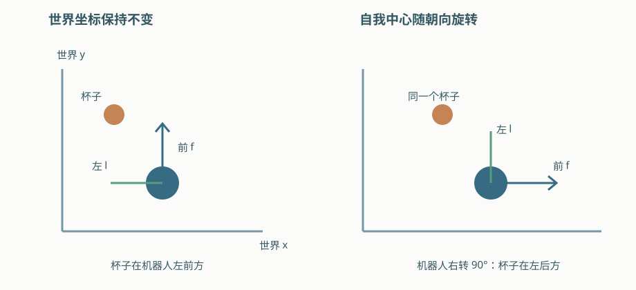

05 · 空间智能：几何、关系、信念与世界模型
05 · 空间智能：几何、关系、信念与世界模型
本章使用工作定义：空间智能是感知、维护、推理和预测空间状态，并利用它指导行动的能力集合。不同研究的定义与评测边界不统一，以下按可检验能力组织。
1. 能力层次与符号
| 层次 | 输入 → 输出 | 验证方式 |
|---|---|---|
| 感知 | 图像 / 点云 → 深度、物体、朝向 | 测量误差 / 定位误差 |
| 表征 | 多帧观测 → 地图、ID、对象关系 | 跨视角一致性 / 漂移 |
| 推理 | 状态与问题 → 关系、距离、可达性 | 几何证据 / 标注答案 |
| 预测 | 状态与动作 → 后续状态 | 多步误差 / 动作后果 |
| 行动 | 目标与空间状态 → 导航 / 操作 | 任务成功 / 碰撞 / 恢复 |
| 符号 | 含义 | 约定 |
|---|---|---|
| 对象 i 的世界位置与协方差 | 米、米平方 | |
| 前向、左向、上向单位基 | 右手系， | |
| 场景图与关系属性 | 边携带参考系和时间 | |
| 真实状态、观测、动作、状态信念 | ||
| 状态转移、观测映射、过程 / 测量噪声协方差 | 卡尔曼模型局部定义 | |
| 潜状态、世界转移模型、规划窗口 | H_p 与观测矩阵 H 区分 |
2. 自我中心与环境中心：关系有参考系
自我中心以相机或机器人当前方向定义前后左右；环境中心以固定地图轴表达。机器人转身后，前者会变化。令 A 为参考物、B 为查询物，。
LaTeX 源码
d=\|\Delta p\|_2,\quad s_{front}=f^\top\Delta p,\quad s_{left}=l^\top\Delta p,\quad s_{up}=n^\top\Delta p.\tag{5.1}约定 表示 B 在 A 左侧。阈值避免把几乎同线的点强行二分类。“inside”和“on”还需要几何范围、接触 / 支撑证据，不能仅比较中心高低。
推导 1 · 带不确定性的关系概率
若位置差近似高斯，且参考轴 l 确定：
LaTeX 源码
\begin{aligned}\Delta p&\sim\mathcal N(\mu_\Delta,\Sigma_\Delta),\\\Sigma_\Delta&=\Sigma_A+\Sigma_B-\Sigma_{AB}-\Sigma_{BA},\\s=l^\top\Delta p&\sim\mathcal N(l^\top\mu_\Delta,l^\top\Sigma_\Delta l),\\P(B\text{ 在 A 左侧})&=\Phi\left(\frac{l^\top\mu_\Delta-\tau}{\sqrt{l^\top\Sigma_\Delta l}}\right).
\end{aligned}\tag{5.2}Phi 为标准正态累积分布函数；两对象独立时交叉协方差为零。若位姿参考轴也不确定，还需对 l 联合传播。共享定位误差会使对象相关，简单相加可能失真。
例如 均值 0.1 m、标准差 0.02 m、阈值 0.05 m，概率约 0.994；若标准差增为 0.1 m，则约 0.691，应返回不确定程度而非同样自信。

3. 场景图：几何地图与语义状态相连
对象节点属性包括类别、实例 ID、位姿、尺寸、可供性、协方差、最后观测时间。边包括 inside、on、near、occludes、reachable-from，每条边保留证据与置信度。

查看 Mermaid 图源码
flowchart LR R[机器人 / 位姿] -->|可达候选| C[红杯 / 世界坐标] C -->|on 支撑关系| T[桌面 / 几何平面] C -->|inside| B[托盘 / 区域边界] S[书架 / 障碍几何] -->|occludes 视角相关| C I[语言指令] --> Q[对象与谓词查询] Q --> C
可供性如“可抓取”依赖机器人、夹爪和姿态；不能视为物体永恒属性。场景图补充几何地图：图负责对象关系，碰撞检测仍查询占据 / 网格等几何。
4. 从多视角观测到状态信念

查看 Mermaid 图源码
flowchart TD
A[RGB-D / IMU / 关节同步] --> P[位姿估计与深度反投影]
A --> D[语义检测 / 分割]
P --> M[统一世界坐标 / 数据关联]
D --> M
M --> F[状态融合 / 协方差更新]
F --> G[场景图 / 几何地图]
G --> Q[指令 grounding / 空间查询]
Q --> C{证据和可达性足够?}
C -->|否| V[主动换视角 / 重定位]
V --> A
C -->|是| E[路径或抓取规划 / 执行]
E --> A推导 2 · 贝叶斯滤波与卡尔曼更新
POMDP 的信念先预测再校正：
LaTeX 源码
\bar b_t(s)=\int p(s|s',a_{t-1})b_{t-1}(s')ds',\quad b_t(s)=\frac{p(o_t|s)\bar b_t(s)}{\int p(o_t|u)\bar b_t(u)du}.\tag{5.3}线性高斯特例 、，：
LaTeX 源码
\begin{aligned}\bar\mu_t&=F\mu_{t-1}+Ba_{t-1},&\bar\Sigma_t&=F\Sigma_{t-1}F^\top+Q,\\S_t&=H\bar\Sigma_tH^\top+R,&K_t&=\bar\Sigma_tH^\top S_t^{-1},\\\mu_t&=\bar\mu_t+K_t(o_t-H\bar\mu_t),\\\Sigma_t&=(I-K_tH)\bar\Sigma_t(I-K_tH)^\top+K_tRK_t^\top.
\end{aligned}\tag{5.4}最后一式为 Joseph 形式，数值上更稳。K 表示预测与观测权衡：测量噪声越大，更新越依赖先验。非线性模型需 EKF / UKF / 粒子等；对象匹配错误是离散歧义，不能靠高斯滤波自动修复。
5. 语言空间推理：可复核的证据链
- Grounding：定位“蓝盒”和“红杯”的具体实例，保留 mask / 3D 候选。
- Geometry：提取位置、尺寸、深度及不确定性，检查单位与时间。
- Reference：确认以相机、机器人还是世界方向解释“左”。
- Predicate：调用关系概率、距离、射线遮挡、碰撞 / 可达查询。
- Answer / Action：给出答案、依据、置信度；证据弱时主动观察。
把数字坐标拼进提示不保证语言模型掌握度量；几何工具输出可验证数值结果，再由模型组织任务和解释。
6. 世界模型与滚动规划
模型可预测真实状态或潜状态：，观测器 。视觉生成合理并不证明动力学正确。
推导 3 · 误差累积、MPC 和主动观测
若单步模型误差至多 epsilon、转移对状态 Lipschitz 常数 L，同动作下：
LaTeX 源码
e_{k+1}\le Le_k+\epsilon,\quad e_H\le L^He_0+\epsilon\sum_{j=0}^{H-1}L^j.\tag{5.5}这是上界解释：L 大于 1 时误差可能迅速增长，并非所有系统必然如此。闭环重新估状态能缩短未校正 rollout。
LaTeX 源码
A^*=\arg\min_{a_{0:H_p-1}}\sum_{k=0}^{H_p-1}c(\hat s_k,a_k)+c_T(\hat s_{H_p}),\quad\hat s_{k+1}=f_\theta(\hat s_k,a_k).\tag{5.6}可增加不确定性惩罚与约束。主动观测选择预期降低信念熵的视角：
LaTeX 源码
a_{view}^*=\arg\max_a\left[\mathcal H(b_t)-\mathbb E_{o\mid a}\mathcal H(b_{t+1})-\lambda\,\operatorname{cost}(a)\right].\tag{5.7}这是规划原则，不是某个世界模型论文的通用训练损失。视角收益需与移动成本、碰撞和时间一起考虑。
7. 应用与研究索引
桌面抓取需要对象定位、接近可达性、支撑关系和接触验证；室内导航结合语义目标、占据地图、动态障碍和定位；AR / 数字孪生侧重重建与对齐，物理模拟还需质量、接触和可碰撞几何。
| 路线 | 代表检索入口 | 本库覆盖 |
|---|---|---|
| 三维感知 | PointNet、NeRF、3DGS、深度估计 | 几何与表示基础 |
| 空间语言 | SpatialVLM、SpatialRGPT、3D-LLM、LEO | grounding 与证据链 |
| 世界模型 | World Models、视频 / 动作条件生成 | 状态预测与规划原则 |
| 基准 | BLINK、ScanQA、SQA3D、VSI-Bench、Habitat | 评测维度与指标 |
上述为旧飞书稿的研究路线索引，未逐篇核验版本、性能与完整实现。详细论文归档应逐项扩充，不能把索引条目视为已讲解模型。
来源：World Models、Habitat 项目、SLAM 因子图；关系概率和误差界是本讲义的教学推导。